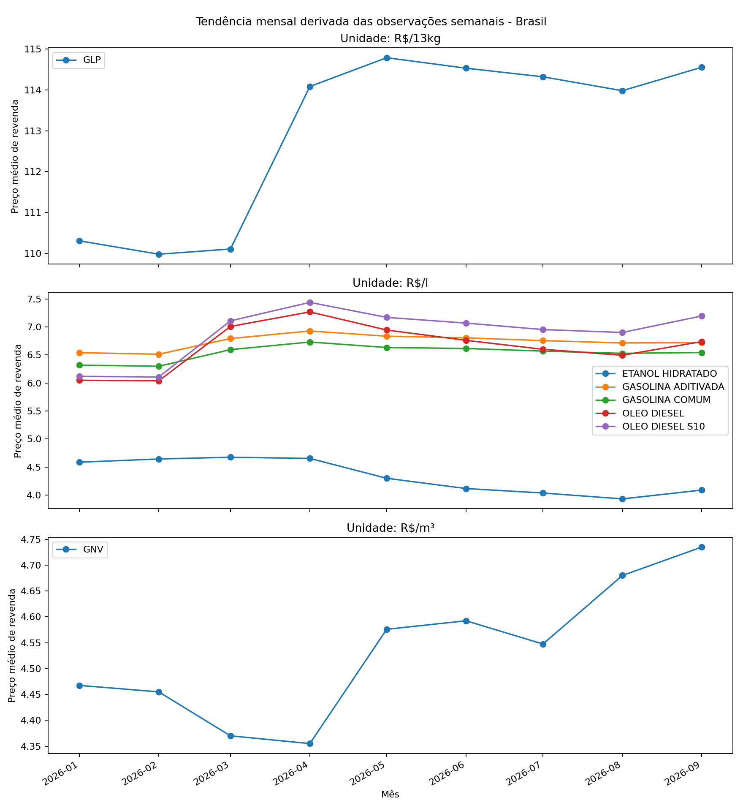
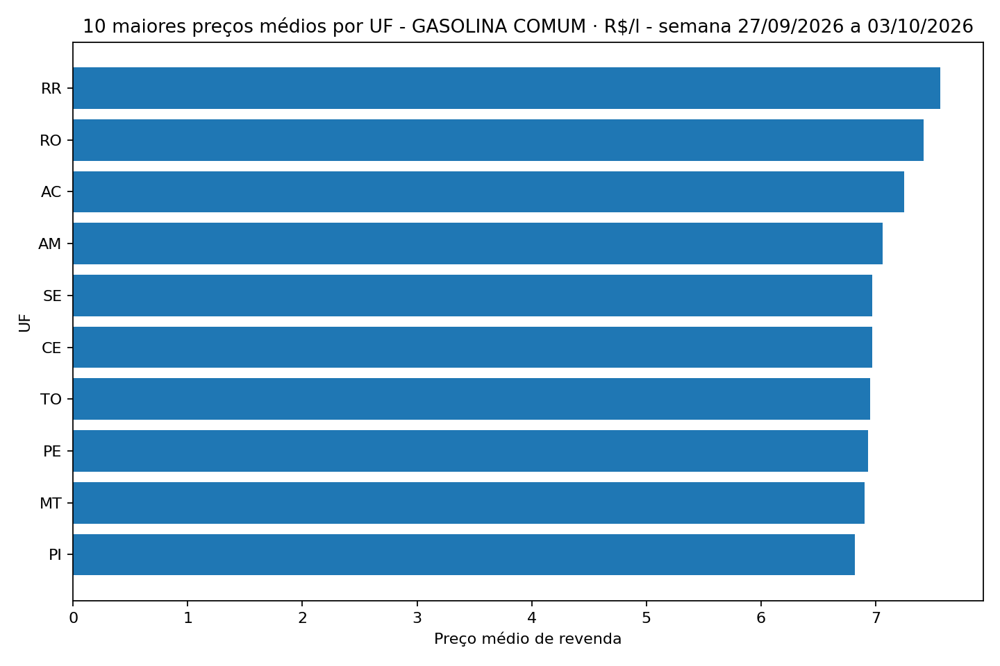
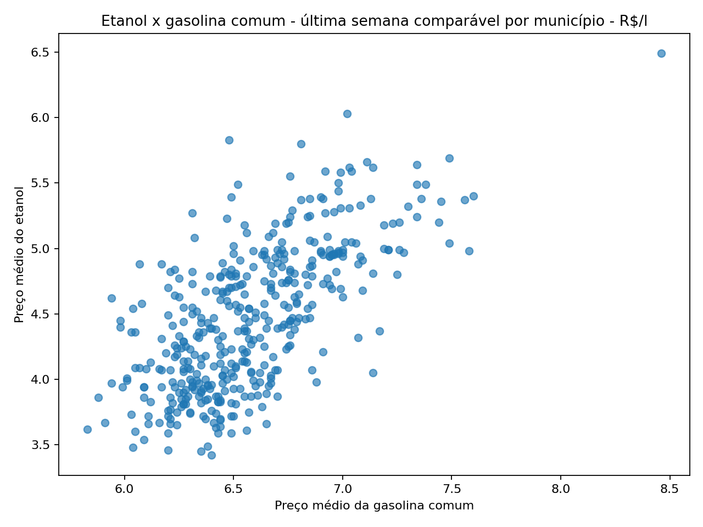
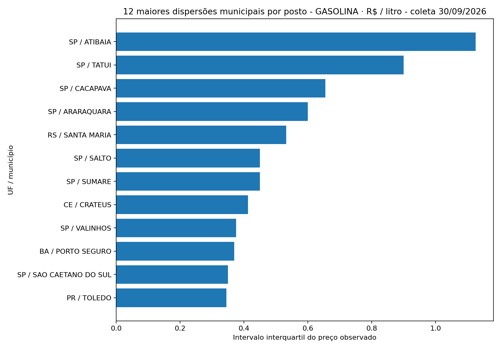
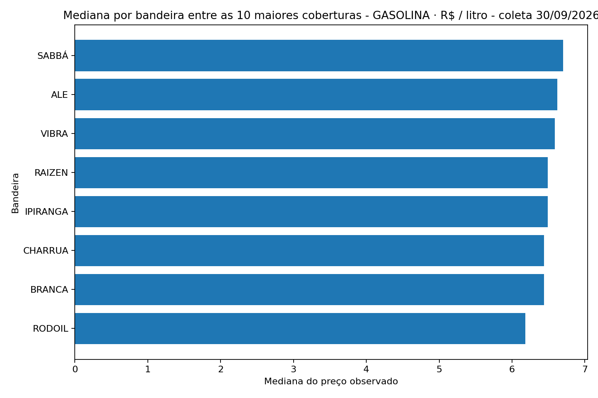

ETANOL HIDRATADO · R$/l
R$ 4,13 última semana- Variação semanal
- +0,73%
- Desde início do ano
- -8,83%
- Mínimo em 2026
- R$ 3,91
- Máximo em 2026
- R$ 4,72
Dados públicos oficiais da ANP
Preços de combustíveis em 2026 analisados com Python, PostgreSQL, modelagem dimensional e Power BI.
Atualização do relatório: 2026-10-04 14:02 UTC
Brasil
ETANOL HIDRATADO · R$/l
R$ 4,13 última semanaGASOLINA ADITIVADA · R$/l
R$ 6,72 última semanaGASOLINA COMUM · R$/l
R$ 6,55 última semanaGLP · R$/13kg
R$ 114,88 última semanaGNV · R$/m³
R$ 4,74 última semanaOLEO DIESEL · R$/l
R$ 6,90 última semanaOLEO DIESEL S10 · R$/l
R$ 7,35 última semanaSérie temporal

Geografia
Série: GASOLINA COMUM · R$/l · semana 27/09/2026 a 03/10/2026
| UF | Preço médio | Postos |
|---|---|---|
| RR | R$ 7,56 | 15 |
| RO | R$ 7,42 | 54 |
| AC | R$ 7,25 | 11 |
| AM | R$ 7,06 | 54 |
| CE | R$ 6,97 | 121 |
| SE | R$ 6,97 | 40 |
| TO | R$ 6,95 | 49 |
| PE | R$ 6,93 | 171 |
| MT | R$ 6,90 | 83 |
| PI | R$ 6,82 | 59 |
Qualidade


Mercado por posto


Metodologia
Os agregados nacionais, regionais e estaduais preservam os indicadores publicados pela ANP. Cálculos derivados pelo projeto são identificados separadamente. Valores extremos não são removidos automaticamente.